This guide covers all the important changes and additions to Fishing in MoP Classic. There are new fish, daily quests, a fishing-focused reputation, and even a mount that walks on water.
Fishing Changes in MoP
- You no longer need to equip a fishing pole. One will appear automatically when you cast, even if you're holding weapons.
- You can start fishing in Pandaria zones with skill 1. Instead of junk, you’ll sometimes catch
 Golden Carp, but not every catch will be one. Higher-value fish start appearing around 500 skill.
Golden Carp, but not every catch will be one. Higher-value fish start appearing around 500 skill.
Pandaria Fishing Trainer
You don’t need to go to Pandaria to train Fishing, since any trainer can teach you all ranks, including Zen Master. You can learn it in Orgrimmar, Stormwind, or any other capital city. If you’re looking for the Pandaria trainer specifically, Nat Pagle can teach you in Krasarang Wilds.
How to Catch Fish
If you're new to Fishing in MoP Classic, follow these simple steps to get started:
- Open your Spellbook (P).
- Click the Professions tab at the bottom and find the
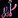
Fishing skill. - Drag the Fishing icon to your action bar. You can also bind it to a mouse button to make things easier.
- Stand near water with a clear view of it, and use the Fishing spell. (You can’t fish while swimming.)
- Hover over the bobber in the water, and right-click it when it splashes.
- If nothing is caught, you probably clicked too early or too late. Try again and time it better.
Leveling Pandaria Fishing
You can level Fishing anywhere, even in zones that require higher skill. You’ll often catch junk in low-skill zones, but your skill will still increase as long as you successfully catch something.
It's best to level Fishing in Pandaria. From skill 1, you’ll start catching  Golden Carp, which is actually useful, unlike the junk or low-level fish in older zones. More valuable fish will start appearing more frequently once you reach around 500 skill.
Golden Carp, which is actually useful, unlike the junk or low-level fish in older zones. More valuable fish will start appearing more frequently once you reach around 500 skill.
Don’t forget to visit your Fishing trainer at skill 75, 150, 225, 375, 450, and 525 to unlock the higher ranks.
Catches Required per Skill Point
You’ll gain skill from any successful catch, even junk. Below 300 skill, you’ll get a point almost every cast. It slows down after that, especially above 450.
It takes around 1,800 catches to reach 600 skill if you're leveling the standard way.
| Fishing Skill | Average Catches per Skill Point |
|---|---|
| 1 - 100 | 1.0 |
| 100 - 200 | 1.6 |
| 200 - 300 | 1.9 |
| 300 - 450 | 3.6 |
| 450 - 600 | 5.5 |
The Anglers Faction
The Anglers are a fishing-themed faction based at Anglers Wharf in Krasarang Wilds. You can earn reputation by doing daily quests, catching rare fish, or completing a short questline in Dread Wastes.
Rewards
Raising your reputation with the Anglers unlocks several valuable rewards for fishing and general convenience. The 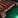 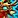
| Reputation | Item | Cost |
|---|---|---|
| Friendly | 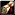 Recipe: Krasarang Fritters |
5g |
| Friendly | Recipe: Viseclaw Soup | 5g |
| Honored | Tiny Goldfish | 250g |
| Honored | 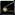 Pandaren Fishing Pole |
25g |
| Revered | 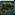 Dragon Fishing Pole |
500g |
| Revered | 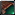 Anglers Fishing Raft |
1,000g |
| Exalted | 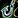 Anglers Tabard |
9g |
| Exalted | Reins of the Azure Water Strider | 5,000g |
Gaining Anglers reputation
You can gain reputation with the Anglers by completing daily quests at Anglers Wharf, turning in rare fish to Nat Pagle. The daily quests are quick and easy, and turning in the three rare fish also grants Anglers reputation alongside Nat Pagle friendship. Once you reach Revered, you can buy a Grand Commendation of the Anglers to speed up reputation gains.
Nat Pagle Friendship
Nat Pagle is the Anglers quartermaster and has a separate friendship rep. To increase it, turn in one of each of these rare fish daily:
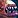
Flying Tiger Gourami – Found in open freshwater areas in Krasarang Wilds and Valley of the Four Winds.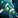
Mimic Octopus – Found in saltwater areas where you catch Reef Octopus. Just fish from the boat Nat Pagle sits on.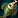
Spinefish Alpha – Found in Inkgill Mere, Kun-Lai Summit.
Each fish gives +600 Nat rep and +350 Anglers rep. You can only turn in each fish once per day.
Friendship Levels
Nat Pagle has 6 friendship ranks:
| Level | Points Required |
|---|---|
| Stranger | 0 - 8,400 |
| Pal | 8,400 - 16,800 |
| Buddy | 16,800 - 25,200 |
| Friend | 25,200 - 33,600 |
| Good Friend | 33,600 - 42,000 |
| Best Friend | 42,000 - 42,999 |
Each rank requires 8,400 friendship points, except Best Friend, which caps at 999/999 like an exalted reputation. In total, you’ll need 42,999 points to reach Best Friend with Nat Pagle, which takes about 27 days if you turn in all 3 rare fish each day.
Friendship Rewards
These are the rewards you can earn from Nat Pagle as you increase your friendship level.
| Friendship | Item | Effect |
|---|---|---|
| Good Friend | 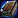 Nat's Fishing Journal |
Reading this book permanently increases your Fishing skill by 50. However, by the time you can buy it, your Fishing will already be maxed, so it's mainly useful for alts. Sold by Nat Pagle for 1,000g. |
| Best Friend | 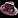 Nat's Hat |
+5 Fishing and applies a +150 Fishing lure every 10 min (10 min CD) |
| Best Friend | 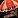 Nat's Fishing Chair |
A cosmetic chair mailed to you when reaching Best Friend |
Fish You Can Catch in Pandaria
These fish are used in Cooking recipes, dailies, reputation, and more.
| Fish | Zones |
|---|---|
| The Jade Forest | |
| Krasarang Wilds, Valley of the Four Winds, Vale of Eternal Blossoms | |
| The Jade Forest, Townlong Steppes | |
| All Pandaria Coastal water | |
| Townlong Steppes, Krasarang Wilds, Valley of the Four Winds, Vale of Eternal Blossoms | |
| All Pandaria Zones | |
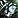 Spinefish |
Caught near Sha-touched lands in Kun-Lai Summit, Dread Wastes, Townlong Steppes, and The Jade Forest. |
| All Pandaria Coastal water | |
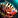 Tiger Gourami |
Kun-Lai Summit, The Veiled Stair |
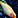 Jewel Danio |
Vale of Eternal Blossoms, Timeless Isle |
Ancient Pandaren Fishing Charm
The
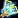
You can get this item by interacting with the Ghostly Pandaren Fisherman in Valley of the Four Winds.
TomTom Command
/way Valley of the Four Winds 46.8 24.6 Ghostly Pandaren Fisherman